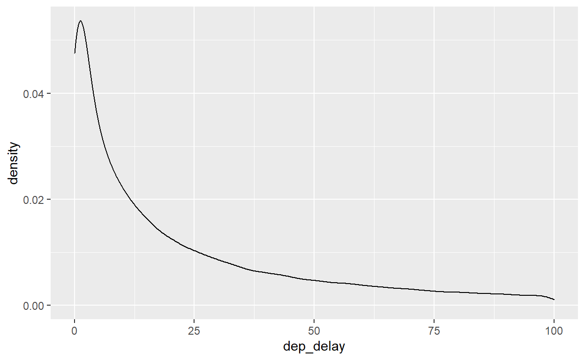

Introdução
Nesse tutorial, vamos ampliar o nosso conhecimento das ferramentas que funcionam com R para facilitar relatórios reproduzíveis. Tudo fica no mundo de programas abertos (‘open-source’) então podemos aproveitar sem custo do mesmo ambiente como milhões de outros pesquisadores.
A primeira ferramenta é Latex, um programa que compila scripts para o formato bem conhecido de PDF. A maior vantagem é a profissionalização dos nossos relatórios - PDF é um formato comum para compartilhar relatórios finais porque eles não podem ser fácilmente editados, e - em contraste com HTML - têm páginas distintas.
Para instalar Latex no seu computador, o jeito mais fácil é rodar o seguinte código em R (existem muitas versões/distribuições; não precisa instalar se já tinha instalado):
install.packages('tinytex')
tinytex::install_tinytex(repos = 'http://ctan.mirrors.hoobly.com/systems/texlive/tlnet')
Segue as instruções - por exemplo, vai aparecer alguns ‘erros’ mas não são problemáticos, então pode continuar sem problema. Depois da instalação, feche o seu R e abra de novo.
Um passo adicional para verificar que tudo esteja configurado bem é accessar em RStudio Tools -> Global Options -> Sweave -> ‘Weave Rnw files using:’ e escolhe ‘knitr’.
Compilando Scripts de R Markdown para PDF
A nossa primeira tarefa não exige nenhuma programação adicional. Na mesma forma que compilamos os nossos documentos com ‘Knit para HTML’ ou ‘Knit para Doc’, a instalação de Latex automaticamente habilita uma nova opção ‘Knit para PDF’.
Pegue um script anterior seu que compila bem para HTML e Knit para PDF. Fácil, sim? Como aparece o novo documento? Mais profissional, eu espero.
No futuro, você fica em controle: pode compilar para qualquer formato é o mais apropriado para o seu relatório.
Relatórios escritos em Latex e compilados para PDF
O que acontece quando compilamos o nosso R Markdown para PDF? O R traduz o nosso script de R Markdown para a linguagem de Latex - literalmente ele gera um arquivo com extensão “.tex” - e depois o programa de Latex interpreta e compila este .tex para PDF.
Isso funciona bem, mas nós estamos constrangidos para preparar os nossos documentos na linguagem de R Markdown, que é bom e muito fácil de aprender, mas limitado. Por exemplo, se quiser controlar em detalhe a formatação ou a paginação, não é possível em R Markdown. Então existe uma segunda forma de usar Latex: preparando o nosso script direitamente na linguagem de Latex, e pulando a etapa de R Markdown. O custo é a necessidade de aprender a linguagem de Latex. Dado o uso frequente de Latex no mundo acadêmico para a preparação de manuscritos, artigos e slides, oferecemos aqui uma guia preliminar.
O nome para a combinação de R + Latex é ‘Knitr’. Há quatro diferenças fundamentais em usar Knitr em vez de R Markdown.
1. O Tipo de Arquivo
Os nossos scripts de R Markdown tem extensão “.Rmd” e um cabeçalho simples. Quando preparamos um script direitamente em Latex, ele precisa uma extensão “.Rnw”. É sempre melhor começar com um modelo, então começa com “File -> New File -> R Sweave” (ignore o significativo de ‘Sweave’, é um nome velho).
O documento abre com três linhas de texto; os mínimos necesários para um documento de Latex:
\documentclass{article} - O tipo de documento que queremos gerar, o mais comum é um article (artigo). Vamos ver embaixo como a gerar apresentações.
\begin{document} - um indicador da começa do conteúdo a ser inserido no documento final. Antes disso podemos inserir pacotes e parâmetros. Depois, digite direitamento o seu texto na gramática de latex.
\end{document} - um indicador do fim do documento. Texto depois será ignorado.
2. Compilando o Documento PDF
Escreve algo simples (eg. Hello World!) depois de \begin{document}. Já é um script de Latex/Knitr válido. Como criamos o nosso PDF final à partir desse script? Observe que quando abrimos um arquivo “.Rnw” não há a opção ‘Knit’ em Rstudio. O equivalente é “Compile PDF”. Experimente! Pode demorar para compilar a primeira vez, mas deve produzir um PDF, salvo na pasta do seu projeto.
3. Formatação de Chunks de Código
O valor de Knitr é que os nossos relatórios contém os produtos de nosso análise de dados, igual como R Markdown. Mas um ponto chato é que os ‘chunks’ que guardam o nosso código de R têm uma definição diferente.
Para inserir um novo chunk, use a opção ‘+ C’ (ao lado de ‘Run’) em Rstudio. Ele aparece um pouco diferente:
Mas significa exatamente o mesmo que o seguinte em Rmarkdown:
```{r}
x <- 1 + 1
x
```Como em Rmarkdown, podemos especificar os mesmos parâmetros dos chunks entre <<>>.
<<echo=F, warning=F, message=F>>
Finalmente, lembre o nosso in-line código? Também é um pouco diferente em Latex/Knitr - precisamos inserir o nome do objeto desejado dentro de \Sexpr{ }.
4. Linguagem de Formatação de Texto Simples
Os três primeiros passos são ajustes simples que podemos aprender e realizar em alguns minutos. A quarta diferença é a mais complexa, mas também a mais poderosa. É o uso da linguagem de Latex fora dos chunks para formatar o nosso texto.
Latex é mais preciso e controlado do que Rmarkdown. O padrão para formatar é \comando{texto}, onde o ‘texto’ é imprimido no documento, e ‘comando’ significa o tipo de formatação desejado.
- \textbf{Bold} - Bold
- \textit{italic} - italic
- \underline{underline} - underline
Para gerar listas não ordenadas:
\begin{itemize}
\item Texto 1
\item Texto 2
\end{itemize}
Para gerar listas ordenadas:
\begin{enumerate}
\item Texto 1
\item Texto 2
\end{enumerate}
Títulos e Secões numerados:
\section{Titulo 1}
\subsection{Subtitulo 1}
\subsubsection{Subsubtitulo 1}
Títulos e Secões não numerados:
\section*{Titulo 1}
\subsection*{Subtitulo 1}
\subsubsection*{Subsubtitulo 1}
Equações em Latex
O mesmo formato de Rmarkdown. Na verdade, o Rmarkdown usa o formato de Latex.
$$\alpha^2 + \beta^2 = \chi^2$$ \[\alpha^2 + \beta^2 = \chi^2\]
$$\frac{\sqrt{1}}{2} * \frac{a}{2b} = \frac{a}{4b}$$ \[\frac{\sqrt{1}}{2} * \frac{a}{2b} = \frac{a}{4b}\] $$\sum_0^{10} x = ...$$ \[\sum_0^{10} x = ...\]
Mais detalhes aqui.
Acentos em Latex
Para inserir acentos, temos duas opções. Primeira opção, abrir um pacote antes de begin{document} e digitar como normal:
\usepackage[latin1]{inputenc}
Segunda opção é usar a formatação especifíca para cada acento, ex:
- \’{e} - é
- \`{a} - à
- \~{o} - õ
- \^{a} - â
- \c{c} - ç
Página inicial do documento
O nosso típo de documento ‘article’ nos permitem especificar um título e várias outras características antes de \begin{document}.
\title{Relatório}
\author{My Name}
\date{Maio 2019}
Se compilar o seu PDF agora, não veja nenhuma diferença. Por que? Porque não tem nada diferente entre begin{document} e end{document}. Para estes característicos aparecem em nosso documento, precisamos inserir o seguinte depois de \begin{document}:
\begin{document}
\maketitle
Agora, deve compilar um documento muito profissional.
Tabelas em Knitr
Latex tem uma gramática de tabelas chato de preparar. Mas nunca precisamos digitar ele direitamente. Como em R Markdown, o jeito mais fácil de gerar uma tabela é criar um tibble em R e passar para a função kable. Insere-lo dentro de um chunk no seu documento .Rnw e precisamos fazer apenas mais uma coisa para que ele aperece bonito: adicione o parâmetro results=‘asis’ no header do chunk, como já fizemos com as tabelas de regressão com stargazer.
| origin | atraso_media |
|---|---|
| EWR | 15.10795 |
| JFK | 12.11216 |
| LGA | 10.34688 |
Figuras em Knitr
Para inserir gráficos gerados por seu código, é a mesma lógica de R Markdown. Crie o gráfico em ggplot dentro de um chunk em seu documento de .Rnw. Não precisamos ajustar nenhum parâmetro do chunk, mas existem várias opções úteis para figuras para controlar o título e tamanho para integrar com Latex.
Figure 1: Titulo de Figura
Para aprender mais sobre Latex, pode explorar as guias aqui, aqui e aqui.
Apresentações
Latex é muito útil para apresentações (slides) profissionais. Há várias opções, mas o mais comum é o estilo ‘beamer’. Comece no início com:
\documentclass{beamer}
Para definir cada ‘slide’ de nossa apresentação, use o seguinte formato:
\begin{frame}
\frametitle{Título do Slide}
Texto, conteúdo normal
Mais texto
\end{frame}
Temos que repetir esta estrutura para cada slide, então 10 slides vão precisar de 10 \begin{frame}. Se quiser inserir uma pausa, aguardando o usuário para avançar, é só inserir \\pause no local apropriado no slide.
Para incluir imagens de um arquivo local na mesma pasta do seu script .Rnw coloque:
\usepackage{graphicx} - antes de \begin{document}
\includegraphics[width=\linewidth]{image.png} - na página/slide onde o imagem deve aparecer
Bibliografias
Um elemento central da pesquisa é a citação dos nossos fontes. Uma citação é simplesmente um conjunto de dados sobre um livro/artigo ou outro fonte que colocamos numa nota de rodapé ou apêndice, e um atalho para a citação no texto (frequentemente autor-ano, ex. ‘(Arrow 1961)’).
Felizmente, existe um formato meia-padrão para o armazenamento das citações - num arquivo com extensão ‘.bib’. Várias programas (Zotero, Mendeley, EndNote etc.) podem te ajudar gestar as citações e geram arquivos ‘.bib’ então não precisamos nos preocupar com o conteúdo deles, mas para referência eles contém conteúdo tipo:
@article{Arrow1961,
author={Arrow, Kenneth J. and Leonid Hurwicz and Hirofumi Uzawa},
title={Constraint qualifications in maximization problems},
journal={Naval Research Logistics Quarterly},
volume={8},
year=1961,
pages={175-191}
}
O elemento crucial aqui é a primeira entrada depois de {, ‘Arrow1961’ - isso é o atalho que vamos usar para citar este artigo para não repetir toda essa informação cada vez que queremos citar o mesmo artigo.
Em R Markdown, o uso de bibliografias é assim:
- Salve o arquivo “.bib” na pasta do seu projeto.
- No cabeçalho, coloque uma linha “bibliography: nome_do_arquivo.bib” para conectar com o arquivo que contém as citações:
- No lugar apropriado no seu texto simples, quando quiser fazer referência à citação, insera
[@Arrow1961], com o atalho apropriado para a citação desejada. - As referências vão aparecer no final do documento, então pode ser útil inserir um título, como
## Referênciasno final do documento.
Em Knitr (com Latex) o uso de bibliografias é um pouco mais complexo infelizmente:
- Salve o arquivo “.bib” na pasta do seu projeto.
- Antes de ‘\begin{document}’ coloque o segunite código:
\usepackage[backend = biber, style=alphabetic, citestyle=authoryear]{biblatex} \bibliography{nome_do_arquivo} (sem “.bib”)
- No lugar apropriado no seu texto simples, quando quiser fazer referência à citação, insera
\cite{Arrow1961}, ou\citep{Arrow1961}se quiser a citação em parênteses, com o atalho apropriado para a citação desejada. - No final do seu documento (imediatamente antes de ‘\end{document}’), coloque
\printbibliography. - Uma restrição chata: Não podemos usar a botão de ‘Compile in PDF’; temos que chamar a compilação do código pelo console (na aba embaixo de RStudio) (e não no seu script), como no código abaixo, onde ‘script.Rnw’ é o nome do seu script (e não o arquivo da bibliografio):
knitr::knit2pdf("script.Rnw", bib_engine = "biber")
Exercício 1: Praticando Latex
Usando o formato “.Rnw”, crie um PDF com texto simples usando pelo menos cinco das formatações acima.
Adicione a famosa equação de Pythagoras.
Adicione uma tabela simples usando o banco de dados de
weatherque mostra o total de precipitação por mês:
- Adicione um gráfico simples usando o banco de dados
weatherque mostra a temperatura média por aeroporto.
Verifique que o seu documento compila bem para PDF.
Ajuste o seu script “.Rnw” acima para gerar uma apresentão do class ‘beamer’ e coloca o texto, a equação, a tabela, e o gráfico em slides diferentes. Compile para PDF de novo.
Controle de Versões com Git
Você já criou um arquivo com nome ‘Final_v23_depois_edits_4b_final_final_v2.doc’? Dois anos depois, você poderia identificar a versão do documento que você enviou para uma colega? Rastreando mudanças em nossos scripts é desafiador, sobretudo com análises complexos. Felizmente, programadores desenvolveram várias ferramentas para ajudar: Vamos usar ‘Git’ em conjunto com Github, o parceiro online de Git.
Git/Github é um sistema de controle de versões com três objetivos:
- Um backup online dos seus arquivos;
- Controlando as versões dos scripts e rastreando mudanças;
- Divulgação/colaboração com outros.
Em preparação:
1. Instale git no seu computador.
2. Crie uma conta no site github.
3. Em R, encontre a aba de ‘Terminal’ ao lado de ‘Console’ e ‘R Markdown’. No terminal, digite o seguinte (duas linhas separadas), substituindo os valores de usuário e email com eles que você usou para abrir a conta de Github online:
git config --global user.name 'yourGitHubUsername'
git config --global user.email 'name@provider.com'
A Lógica de Git
Git é poderoso e complexo, mas podemos usar apenas as capabilidades relevantes para nos. A ideia pode ser separada em dois fluxos de trabalho:
Controle de Versões: Vamos organizar cada mudança substancial em nosso código em um pacote, e indica para Git uma descrição rápida das mudanças. Ex. “Criando gráfico de pontos dos vôos”. No futuro, podemos identificar o pacote relevente pela sua descrição e ver linha por linha as mudanças feitas em cada pacote. Definindo um pacote com Git se chama um
commit.Backup/Colaboraçao Online: Vamos enviar cada pacote para um servidor online (um ‘repositório’) de Github, que podemos compartilhar com colegas, ou acessar de um outro computador. Enviando código ao repositório em Git se chame um
push.
Quando temos mais de uma pessoa trabalhando no mesmo script, o nosso repositório serve como a versão ‘atual’ do script. Isso exige um pouco mais de esforço - temos que baixar a versão atual do repositório antes de trabalher nele - fazer um pull em Git - e subir as nossas mudanças - com push - quando terminado para disponibilizar para outros.
O gráfico abaixo mostra como funciona o fluxo de código com as várias comandas:

Antes de descrever o que fazer em RStudio, recomendamos o seguinte fluxo de trabalho simples para trabalhar com Git. Cada vez que querer trabalhar no seu projeto:
- Abre o projeto (Git apenas funciona dentro de um projeto)
Pulla versão mais atual do repositório do Github- Faça as suas mudanças no código/relatório
- Quando complete uma tarefa discreta,
Commito pacote de mudanças com uma descrição Pusho seu pacote/commit para o repositório online- Feche o projeto
Preparando Git/Github em RStudio
Existe um pequeno custo fixo para configurar um projeto para trabalhar com Git/Github. O primeiro passo é criar um repositório online no Github. Pode criar o seu próprio repositório com a opção ‘New Repository’ no site e copiar o link (URL) do repositório listada na botão verde ‘Clone or Download’. (Ou se dê problema, pode usar o link https://github.com/JonnyPhillips/repositorio_clone.git.)
Agora, vamos usar o link para conectar o Github com RStudio. Abre RStudio e vamos ‘clonar’ este repositório para um projeto local no seu computador: File -> New Project -> Version Control -> Git. Agora, colar o link do repositório de Github como ‘Repository URL’, e escolha o nome e a pasta onde o repositório/projeto será baixado no seu computador.
Agora, temos um projeto ligado com o nosso repositório de Github. Na aba ‘files’ em RStudio agora aparece a lista de arquivos no repositório/projeto. Crie um novo script de Rmd. Neste arquivo, coloca o código seguinte para produzir um gráfico. Salve com nome “teste.Rmd” na mesma pasta do seu projeto/repositório (deve ser a pasta padrão).
library("tidyverse")
library("nycflights13")
flights %>% ggplot() +
geom_density(aes(dep_delay)) +
xlim(0, 100)

Vá para o repositório na sua conta no github - veja que o arquivo ‘teste.Rmd’ não está presente e só fica no seu computador local. Para sincronizar e ‘atualizar’ o repositório do github com as nossa mudanças locais, temos que fazer o seguinte:
- Abre a aba ‘Git’ em Rstudio (normalmente na mesma região de ‘Environment’)
- Clique o checkbox ao lado de cada arquivo que você quer atualizar, incluindo ‘teste.Rmd’. O ‘Status’ vai mudar para “A” (que significa ‘Adicionado’), ou se você esteja atualizando um arquivo já existente, “M” (que significan ‘Modificado’). Cada vez que você ajuste e salva um arquivo no projeto local, o arquivo vai aparecer na lista nessa aba de Git.
- Clique ‘Commit’ na aba de Git e vai abrir uma caixa que mostra todas as diferenças entre o nosso código local e o código do arquivo no github online: aditivos em verde e remoções em vermelha. A única coisa que temos que fazer nessa caixa é adicionar uma mensagem que descreve o conteúdo da mudança feita, ex. “Adicionar gráfico de atrasos”, e clique em
Commit. Quando terminado, feche as caixas. Deve ver que a aba de Git está vazia agora, com a notícia de “Your branch is ahead of ‘origin/master’ by 1 commit”. Isso significa que o seu novo script foi cadastrado no fluxo de trabalho do projeto (o controle de versão), mas ainda não foi sincronizado online. - O passo final é clicar
Pushna aba ‘Git’ em RStudio (a seta verde). Isso sincroniza as mudançãs contidas nocommitcom a versão dos arquivos online, disponibilizando elas para as suas colegas.
Agora vá para o repositório na sua conta no Github online, atualize a página, e confirme que o novo arquivo ‘teste.Rmd’ aparece. (É possível que tem que aguardar alguns minutos para ele aparecer, mas normalmente é imediato). Se entrar no link de ‘1 commit’ na página do seu relatório, pode ver todos os commits anteriores, e os detalhes de mudanças de código em cada um.
Parabéns, agora o seu trabalho está seguro com um backup online, documentado com a história de versões rastreável, e accessível por suas colegas!
Habilidade Básica de Programação: Privacidade
O default para Github é que os repositórios ficam abertos para todo o mundo acessar, encorajando transparência e reprodutibilidade. Mas tome cuidado que o seu projeto não contém dados confidenciais ou informação pessoal.
Se você tenha uma conta paga, ou uma conta estudantil, pode tornar a sua conta privada e adicionar apenas os colaboradores desejados - em Github vai para Settings -> Make Private.
Exercício 2: Usando Git
Crie um novo repositório na sua conta de Github e conectar (‘clonar’) com um novo projeto no seu RStudio.
Copiar o seu script de Exercício 1 (o .Rnw) para a pasta local do seu projeto novo criado no passo anterior.
Adicione mais um gráfico ao seu script, mostrando a humidade média por mês.
Commita versão atualizada com uma descrição apropriada.Pushas mudanças para o seu repositório de Github. Verifique que o novo arquivo está atualizado no repositório da sua conta de Github.
Checkpoint
A última ferramanta listada aqui é menos usada, mas atende um problema que já é familiar para vocês - complexidades e conflitos de pacotes de R. Essa seção é optativa porque não é essencial para o seu trabalho pessoal mas pode ser útil para projetos maiores e colaborativos.
O que vai acontecer se mandamos o nosso script de R Markdown para uma colega? Vai funcionar? Será reprodutível? Frequentemente não. Mesmo que eles tem exatamente os mesmos arquivos e usa a mesma versão de R e RStudio, não podemos garantir que eles terão acesso às mesmas funções que usamos para fazer nosso script. Lembre-se que tivemos que instalar cada um dos nossos pacotes (install.packages()) - se o receptor não tiver feito o mesmo ou tiver uma versão diferente de um pacote, nosso código vai quebrar.
Para resolver isso, podemos usar o pacote checkpoint para garantir reprodutibilidade de pacotes. Num site online, o checkpoint salva cada dia todos os pacotes disponíveis em R (de CRAN). Nós só precisamos escolher uma data para o nosso código para que ele usa o conjunto consistente de pacotes salvos nessa data sempre que o código seja executado. Como aproveitamos? Apenas coloque o seguinte código (com sua data preferida) no início do seu código:
#install.packages("checkpoint")
library(checkpoint)
checkpoint("2020-05-10")
Desde que o checkpoint vai salvar uma copia dos pacotes localmente, funciona melhor dentro de um projeto de R.
Leitura para Tutorial 11
Antes da próxima aula, por favor leia R 4 Data Science, Capítulos 20 r 21 sobre Vetores e Iteração